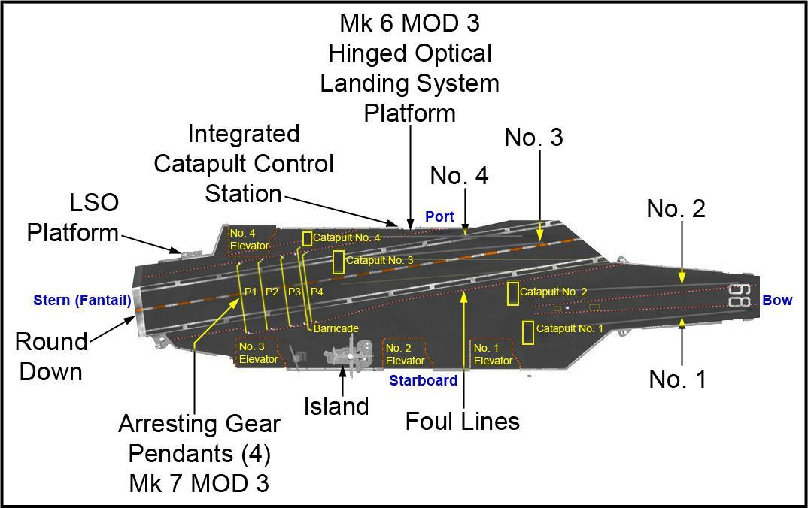
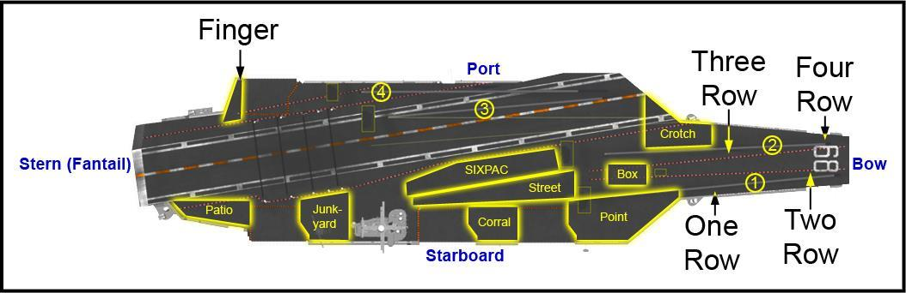
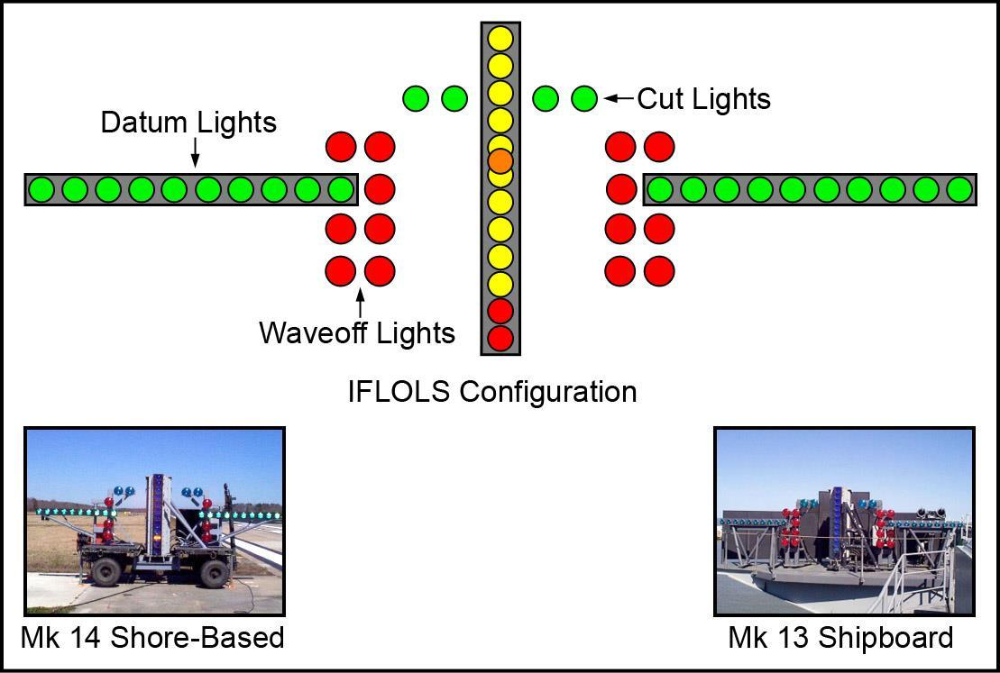
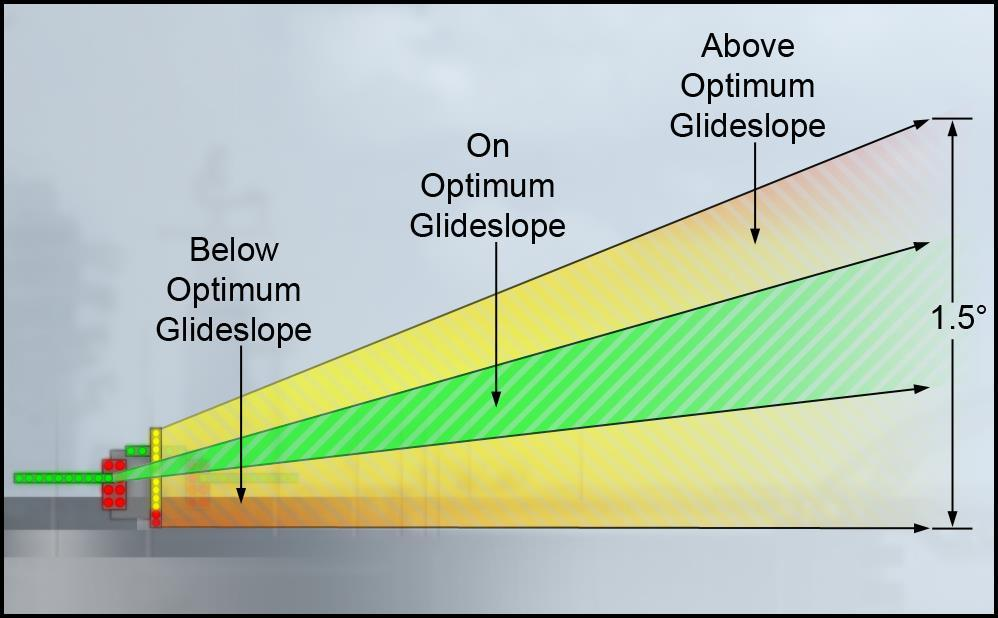
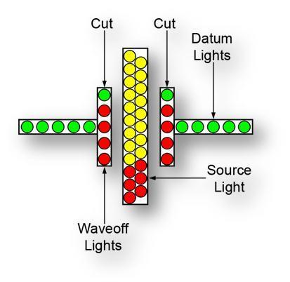

Bu sayfa P-816'nın Bölüm 1 kısmının (s. 1-1 – 1-16) Türkçe eğitim uyarlamasıdır. Terimler orijinal İngilizce hâliyle korunmuştur. Esas metin İngilizce orijinaldir; çelişki hâlinde orijinal geçerlidir. Belgedeki tutarsızlıklar Kaynak notu kutularıyla işaretlenmiştir (4 adet).
100Giriş
Uçak gemisi ve Taşıyıcı Vurucu Grup (CSG)
Uçak gemisi (CVN) ABD deniz stratejisinde kritik bir rol oynar. Destek ve muharip harp gemileriyle birlikte Carrier Strike Group (CSG)'un merkezidir. Gemi ve destek grubunun hızı ve esnekliği, dünyadaki sıcak noktalara hızla müdahale etme imkânı verir. Egemen ABD toprağı sayılan gemi hızla konuşlandırılabilir ve Carrier Air Wing (CVW)'in tüm gücünü vurucu grubun yüzlerce mil ötesine taşıyabilir. Bu güçlü ve esnek deniz kuvveti dar sularda da açık okyanusta da aynı başarıyla çalışır. Müşterek Komutana (Joint Commander), Fleet Response Plan (FRP) taahhütlerini ve varlık (presence) gereksinimlerini karşılayacak operasyonel esnekliği ve harp kabiliyetini sağlar.
- 1-1.02The aircraft carrier (CVN) plays a critical role in the maritime strategy of the United States.
- 1-1.03Together with a full complement of support and combat warships, the carrier is the centerpiece of the Carrier Strike Group (CSG).
- 1-1.04The speed and flexibility of the aircraft carrier and its support group provide our nation with the ability to rapidly respond to world hot spots.
- 1-1.05As sovereign U.S. territory, the aircraft carrier is rapidly deployable and can swiftly bring to bear the entire might of the Carrier Air Wing (CVW), projecting U.S. military power hundreds of miles from the Strike Group.
- 1-1.06This extremely formidable, yet highly flexible naval force can operate with equal success in confined waters or on the open ocean.
- 1-1.07This unprecedented force provides the Joint Commander with the operational flexibility and war-fighting capability to meet all Fleet Response Plan (FRP) commitments and presence requirements in support of national strategies.
Deniz stratejisinin altı temel kabiliyeti:
- İleri varlık (forward presence)
- Güç aktarımı (power projection)
- Caydırıcılık (deterrence)
- Deniz güvenliği (maritime security)
- İnsani yardım / afet müdahalesi (humanitarian assistance / disaster response)
- Deniz kontrolü (sea control)
CSG'nin esnekliği ve ölçeklenebilirliği bu görevlerin herhangi birini destekler: denizleri seçici olarak kontrol edebilir, karaya güç aktarabilir, dost kuvvetleri ve sivil halkı saldırıya karşı koruyabilir. Güç aktarımı, bir hasmı belirli bir politika veya hedefe yöneltmek ya da ondan vazgeçirmek için askerî gücün tehdit olarak veya fiilen kullanılmasıdır. Bu sefer kuvvetinin çok yönlülüğü, erişimin engellendiği veya kısıtlandığı bölgelerde askerî ayak izini büyütüp küçültebilme asimetrik avantajını verir; altı temel kabiliyet bu sırada korunur. CSG'nin hızı, hassasiyeti ve öldürücülüğü onu ülkenin birincil "zorla giriş" (forcible entry) seçeneği yapar ve diğer krizlere hızlı yanıt imkânı verir.
- 1-1.08The six core capabilities essential to our maritime strategy are: forward presence, power projection, deterrence, maritime security, humanitarian assistance/disaster response, and sea control.
- 1-1.09The flexibility and scalability of the CSG provide the means to support any one of these missions.
- 1-1.10It is capable of selectively controlling the seas, projecting power ashore, and protecting friendly forces and civilian populations from attack.
- 1-1.11Power projection can be viewed as the threat or actual use of military force against an adversary to either induce or dissuade it from pursuing a given policy or objective.
- 1-1.12The expeditionary character and versatility of this maritime force provide the U.S. the asymmetric advantage of enlarging or contracting its military footprint in areas where access is denied or restricted, while still maintaining the six core capabilities.
- 1-1.13The speed, precision and lethality of the CSG ensure the Nation’s primary forcible entry option and provide the means to respond quickly to other crises.
Tipik bir CSG
| Unsur | Sayı |
|---|---|
| Uçak gemisi | 1 |
| Kruvazör | en az 1 |
| Muhrip filosu (muhrip ve/veya fırkateyn) | en az 2 gemi |
| Carrier Air Wing (döner ve sabit kanat) | yaklaşık 70 uçak |
| Ek olarak bulunabilir | hücum denizaltıları, lojistik gemileri, ikmal gemisi |
Geminin ve hava kanadının CSG içindeki ana rolü birincil taarruz ateş gücünü sağlamaktır; gruptaki diğer gemiler savunma ve destek sağlar. Uçak gemisi her türlü havada gece-gündüz uçuş operasyonu sürdürebilen, denizde yüzen bir hava üssüdür. CSG'nin ana gemisi (capital ship) olarak ABD güç aktarımının merkezindedir; kara üssüne ihtiyaç duymadan dünya çapında hava gücü aktarımı sağlar.
- 1-1.14A typical CSG is comprised of an aircraft carrier, at least one cruiser, a destroyer squadron of at least two destroyers and/or frigates, and a carrier air wing of approximately 70 rotary and fixed wing aircraft; additionally, a CSG may also include fast attack submarines, attached logistics ships and a supply ship.
- 1-1.15The principal role of the carrier and its air wing within the CSG is to provide the primary offensive firepower, while the other ships in the strike group provide defense and support.
- 1-1.16The aircraft carrier is a sea-going airbase capable of sustaining round-the- clock flight operations in all weather conditions.
- 1-1.17As the capital ship in the CSG, the carrier is the centerpiece of U.S. power projection.
- 1-1.18It provides the nation the ability to project air power worldwide without the need for land bases.
Gemi uçuş operasyonları, son derece dinamik bir ortamda en ağır çalışma koşullarını içerir. Karadan farkları: sürekli yüksek operasyon temposu (Op Tempo), havaalanı seçeneklerinin ve uygun yedek meydanların (divert) azlığı ve istatistiksel olarak daha karmaşık ve tehlikeli bir ortam. Kazasız ve başarılı gemi operasyonunun temel unsurları emniyet ve takım çalışmasıdır. "Boat" üzerinde ve çevresinde başarı için prosedürlerin ve uygulamaların eksiksiz anlaşılması gerekir.
- 1-1.19Referred to as the “edge of the envelope,” carrier flight operations involve the most extreme working conditions in a highly dynamic environment.
- 1-1.20The extremes of operations at sea as opposed to ashore include sustained high operations tempo (Op Tempo), reduced choice for airfield selection and suitable diverts, and statistically a more complex and hazardous environment.
- 1-1.21Safety and teamwork are essential elements contributing to mishap free and successful carrier operations.
- 1-1.22A thorough understanding of the procedures and practices is necessary for success when flying and operating in, on, and around the “boat.”
Bölüm soruları
0 / 3Tipik bir CSG'de en az kaç muhrip ve/veya fırkateyn bulunur?
Muhrip filosu "en az iki muhrip ve/veya fırkateyn"den oluşur; ayrıca en az bir kruvazör vardır.
Kaynak: s. 1-1 (1-1.14)
CSG içinde uçak gemisi ve hava kanadının ana rolü nedir?
Savunma ve desteği gruptaki diğer gemiler sağlar.
Kaynak: s. 1-1 (1-1.15)
Aşağıdakilerden hangisi belgede sayılan altı temel kabiliyetten biri DEĞİLDİR?
Altı kabiliyet: forward presence, power projection, deterrence, maritime security, humanitarian assistance/disaster response, sea control.
Kaynak: s. 1-1 (1-1.08)
101Gemi organizasyonu
Uçak gemisinin (CVN) görevi, müşterek ve koalisyon kuvvetlerini desteklemek için her türlü hedefe karşı taarruz, erken ihbar, gözetleme ve elektronik görevler yapan uçakları desteklemektir. Bunun için gemideki yaklaşık 5.000 (4.660–5.680) kişi takım hâlinde çalışır. Personel iki sınıfa ayrılır: Hava Kanadı (Air Wing) personeli ve gemi personeli (ship's company). Geminin ve vurucu grubun başarısı, bu iki grubun yakın çalışma ilişkisine doğrudan bağlıdır.
- 1-2.02The mission of an aircraft carrier (CVN) is to support the aircraft that conduct attack, early warning, surveillance, and electronic missions against the full spectrum of targets in support of joint and coalition forces.
- 1-2.03In order to accomplish this daunting task, the roughly 5,000 (4,660- 5,680) personnel on the carrier must work as a team.
- 1-2.04Personnel can be broken down into two distinct classifications: Air Wing personnel and ship’s company.
- 1-2.05The success of the carrier and the strike group is directly impacted by the effectiveness of the close working relationship between these groups.
Gruplama şemasıdır, resmî kadro şeması değildir. Yalnızca belgede açıkça geçen bağlantılar gösterilmiştir.
1. Hava Kanadı personeli
Carrier Air Wing (CVW) 7–8 filodan, yaklaşık 70 döner ve sabit kanatlı uçaktan ve 2.500 personelden oluşur. Tipik bir hava kanadı:
| Filo tipi | Sayı | Uçak |
|---|---|---|
| VFA | 4 filo | Hornet / Rhino |
| VAQ | 1 filo | Growler |
| VAW | 1 filo | Hawkeye |
| HSC / HSM | 1–2 filo | Helikopter |
| VRC | 1 lojistik destek müfrezesi (Logistic Support detachment) | Greyhound |
- 1-2.07The Carrier Air Wing (CVW) is comprised of seven to eight squadrons, numbering approximately 70 rotary and fixed wing aircraft and 2,500 personnel.
- 1-2.08The typical Air Wing is comprised of:
- 1-2.09(a) 4 VFA (Hornet/Rhino) squadrons
- 1-2.10(b) 1 VAQ (Growler) squadron
- 1-2.11(c) 1 VAW (Hawkeye) squadron
- 1-2.12(d) 1-2 HSC/HSM (Helicopter) squadrons
- 1-2.13(e) 1 VRC (Greyhound) Logistic Support detachment
Air Wing Commander = CAG. CAG, gemideki tüm hava kanadı uçaklarından ve personelinden genel olarak sorumludur. CAG'ın yardımcısı (XO) Deputy CAG (DCAG)'dır.
- 1-2.14Air Wing Commander. The Air Wing Commander is called CAG.
- 1-2.15CAG has overall responsibility for all aircraft and Air Wing personnel embarked on the carrier.
- 1-2.16The CAG’s executive officer (XO) is the Deputy CAG (DCAG).
Landing Signal Officer (LSO, "paddles"): Hava kanadındaki, sabit kanatlı uçakların gemiye emniyetli ve süratli indirilmesinden (recovery) sorumlu kalifiye pilotlardır. Pilotların gemiye iniş tekniği eğitiminden de nihai olarak LSO'lar sorumludur: yer eğitimi, danışmanlık ve her pilotun performansı üzerine debrief. LSO'lar uçağı emniyetle indirmek için telsiz çağrıları kullanır. LSO ifadeleri üç tip çağrıya ayrılır: INFORMATIVE (bilgilendirici), ADVISORY (tavsiye) ve IMPERATIVE (emir).
- 1-2.17Landing Signal Officers. Landing Signal Officers (LSOs) or “paddles” are qualified pilots within the Air Wing that are responsible for the safe and expeditious recovery of fixed-wing aircraft aboard the ship.
- 1-2.18The LSOs also have the ultimate responsibility for the training of pilots in carrier landing techniques by conducting ground training, counseling, and debriefing individual pilots on their performance.
- 1-2.19LSOs use radio calls to effect the safe recovery of aircraft.
- 1-2.20LSO phraseology is categorized into three types of calls: INFORMATIVE, ADVISORY, and IMPERATIVE.
Genellikle her filoda, kendi pilotlarının eğitiminden ve değerlendirmesinden sorumlu iki veya daha fazla LSO bulunur. Filo LSO'ları farklı takımlara atanır ve pilotların iniş güncelliği (currency) ve performansı hakkında CAG LSO'ya rapor verir. Uçuş operasyonları sırasında her LSO takımı LSO platformunu 24 saat boyunca işletir. Her recovery'den sonra LSO'lar tüm ready room'ları dolaşıp yeni inen pilotlara debrief verir.
- 1-2.21Generally, each squadron will have two or more LSOs that are responsible for the training and evaluation of their squadron pilots.
- 1-2.22Squadron LSOs are assigned to different teams and report to the CAG LSO regarding pilot landing currency and performance.
- 1-2.23Each LSO team will be responsible for manning the LSO platform for a 24-hour period during flight operations.
- 1-2.24Following each recovery, the LSOs will make rounds to all the ready rooms and debrief the pilots who have just landed.
2. Gemi personeli (Ship's Company)
Gemi personeli yaklaşık 3.200 kişiden oluşur ve doğrudan geminin Komutanına (CO) bağlı çalışır; hiçbir filoya veya hava kanadına atanmamıştır. Gemideki üst liderlik pozisyonlarını, zorlu ek eğitimden geçmiş havacılar doldurur:
| Pozisyon | Lakap |
|---|---|
| Commanding Officer (CO) | — |
| Executive Officer | BIG XO |
| Navigator | GATOR |
| Operations Officer | OPSO |
| Air Operations Officer | — |
| Strike Operations Officer | — |
| CDC Officer | — |
| Air Officer | Air Boss |
| Assistant Air Officer | Mini Boss |
| Catapult Officers | Shooters |
| Aircraft Handling Officer | Handler |
- 1-3.02The ship’s company is comprised of approximately 3,200 personnel who work directly for the Commanding Officer (CO) of the carrier.
- 1-3.03These personnel are not assigned to any squadron or the air wing.
- 1-3.04The senior leadership positions on the carrier are filled by aviators who have undergone rigorous additional training.
- 1-3.05These include:
- 1-3.06(a) Commanding Officer (CO)
- 1-3.07(b) Executive Officer (BIG XO)
- 1-3.08(c) Navigator (GATOR)
- 1-3.09(d) Operations Officer (OPSO)
- 1-3.10(e) Air Operations Officer
- 1-3.11(f) Strike Operations Officer
- 1-3.12(g) CDC Officer
- 1-3.13(h) Air Officer (Air Boss)
- 1-3.14(i) Assistant Air Officer (Mini Boss)
- 1-3.15(j) Catapult Officers (Shooters)
- 1-3.16(k) Aircraft Handling Officer (Handler)
Operations Department (OPSO): Havadaki uçakların kontrolünden sorumludur; kontrolün fiilî kalkış veya iniş (launch / recovery) ile bağlantılı olduğu durumlar hariç. OPSO, Vurucu Grup Komutanı (Strike Group Commander) ile yakın çalışarak grup operasyonlarını planlar ve koordine eder.
- 1-3.17Operations Department. The OPSO is responsible for the control of airborne aircraft except when control is not incidental with actual launch or recovery of aircraft.
- 1-3.18The OPSO works closely with the Strike Group Commander to plan and coordinate Strike Group operations.
Air Operations (Air Ops): OPSO'ya karşı sorumludur. Uçuş operasyonlarıyla ilgili tüm konuların koordinasyonundan ve CATCC'nin düzgün çalışmasından sorumludur; yaklaşma tipini ve gerekli kontrol derecesini belirler. Gece ve marjinal hava koşullarında uçakları kontrol etmenin yanı sıra divert eden uçakları ve tüm kargo / yolcu transferlerini koordine eder ve takip eder.
- 1-3.19Air Operations. Air Ops is responsible to the OPSO for coordination of all matters pertaining to flight operations, the proper functioning of the Carrier Air Traffic Control Center (CATCC) and shall determine the type of approach and required degree of control.
- 1-3.20In addition to controlling aircraft at night and in marginal weather conditions, Air Ops coordinates and tracks diverting aircraft, as well as all cargo and passenger transfers.
Carrier Air Traffic Control Center (CATCC): Doğrudan Air Ops'a bağlı, güncel uçuş operasyonlarından sorumlu iş merkezidir; karadaki hava trafik kontrol merkezinin işlevlerini görür. Sorumlulukları:
- Tüm gemi uçuş operasyonlarının durumunu takip etmek.
- Carrier Control Area (CCA) içinde, kulenin (Boss) kontrolünde olmayan tüm havadaki uçakları kontrol etmek. CCA, geminin 50 NM çevresindeki tüm hava sahasıdır.
- Gece ve IMC'de uçaklara kalkış (Departure) ve yaklaşma (Approach) radar kontrolü vermek.
- 1-3.21Carrier Air Traffic Control Center. The Carrier Air Traffic Control Center (CATCC) is the work center directly under Air Operations that is responsible for current flight operations.
- 1-3.22It performs the same functions as a land-based air traffic control center.
- 1-3.23CATCC responsibilities include:
- 1-3.24(a) Tracking the status of all carrier flight operations.
- 1-3.25(b) Control of all airborne aircraft within the Carrier Control Area (CCA) not under the control of the tower (Boss).
- 1-3.26The CCA includes all airspace within 50 NM of the carrier.
- 1-3.27(c) Providing Departure and Approach radar control of aircraft at night and in IMC.
Strike Operations (Strike Ops): Ops içinde gelecek operasyonlardan sorumlu birimdir. Air Tasking Order (ATO)'nun koordinasyonundan ve Air Plan'ın hazırlanıp dağıtılmasından sorumludur.
- 1-3.28Strike Operations. The department within Ops responsible for future operations is Strike Ops.
- 1-3.29Strike Ops is responsible for coordinating the Air Tasking Order (ATO) and producing and distributing the Air Plan.
Combat Direction Center (CDC): Birincil sorumluluğu geminin öz savunmasıdır. Geminin tüm öz savunma silahlarının (füzeler ve Close-in Weapon System [CIWS]) atış kontrolleri CDC'dedir. Havadaki unsurların yakın koordinasyonu ve birbirinden ayrılması (de-confliction) için CDC, Air Ops ve CATCC'nin yanındadır. CDC Officer geminin savunmasından sorumludur ve atanmış uçakların görev kontrolünü (mission control) yürütür. CDC ayrıca özel operasyonlar hakkında, örneğin havadan yere silah atışları ve havadan havaya füze atışları için, özel bilgi sağlar.
- 1-4.01Combat Direction Center. The Combat Direction Center’s (CDC) primary responsibility is ship self-defense.
- 1-4.02Fire controls for all the ship’s self-defense weapons (missiles and Close-in Weapon System [CIWS]) are located in CDC.
- 1-4.03CDC is located next to Air Ops and CATCC; this facilitates close coordination and de-confliction of airborne assets.
- 1-4.04The CDC Officer is responsible for the defense of the carrier and is charged with mission control of assigned aircraft.
- 1-4.05CDC will also provide specific information regarding special operations, including Air-to- Surface weapon drops and Air-to-Air missile shoots.
Air Boss / Air Officer: Primary Flight Control'dan (Pri-Fly) uçuş güvertesindeki tüm uçak faaliyetlerini ve Carrier Control Zone (CCZ) içindeki uçakları yönetir. CCZ, geminin 5 NM çevresinde yüzeyden 2.500 ft'e kadar olan hava sahasıdır. Air Boss ayrıca kalkış / iniş Case'ini belirler.
- 1-4.06Air Boss/Air Officer. From Primary Flight Control (Pri-Fly), the Air Boss directs all aircraft activity on the flight deck, as well as aircraft operating in the Carrier Control Zone (CCZ).
- 1-4.07The CCZ is that airspace within 5 NM of the carrier extending from the surface to 2,500 feet.
- 1-4.08The Air Boss also determines the Case launch/recovery.
Primary Flight Control (Pri-Fly): Normal bir havalimanındaki kulenin işlevini görür; launch ve recovery'nin ilerleyişini takip eder. Uçuş güvertesinin altı kat üstünde, ana köprünün (main bridge) tam üzerindedir ve doğrudan Air Boss için çalışan personelle işletilir. Tüm VFR operasyonlarında Pri-Fly'da bir filo temsilcisinin (Squadron Rep / "Tower Flower") bulunması zorunludur. Tower Flower'ın rolü uçak acil durumunda yardım etmektir: gerekirse ready room ile koordine eder, havadaki ekiple doğrudan konuşur, Boss'un platforma / filoya özgü sorularını yanıtlar ve Boss'un geri bildirimini ready room'a aktarır. Gece ve IMC operasyonlarında filo temsilcisi Air Ops'ta bulunur.
- 1-4.09Primary Flight Control. Primary Flight Control (Pri-Fly) serves the same function as an air traffic control tower at a traditional airport, tracking the progress of the launch and recovery.
- 1-4.10It is located six stories above the flight deck, directly over the main bridge, and is manned by crewmembers that work directly for the Air Boss.
- 1-4.11A squadron representative (Squadron Rep or “Tower Flower”) is required to be present in Pri-Fly during all VFR operations.
- 1-4.12The role of the Tower Flower is to offer assistance during an aircraft emergency.
- 1-4.13If needed, the Tower Flower can coordinate with the ready room, communicate directly with the airborne aircrew, answer platform/squadron specific questions for the Boss, and relay feedback from the Boss to the ready room.
- 1-4.14During night and IMC operations, the squadron representative will be located in Air Ops.
Flight Deck Control (FDC): Uçuş güvertesinde, adanın (island) dibindedir. Handler ve ekibi burada uçuş güvertesi ve hangardaki tüm uçakların durumunu takip eder. Temel araç "Ouija board"dur: uçuş güvertesi ve hangarın şekillerinin kazındığı iki katlı şeffaf plastik masa. Üzerinde gemideki her uçağı temsil eden ölçekli maketler bulunur; uçak yer değiştirdiğinde maket de taşınır, bakımda olan (down) uçağın maketi ters çevrilir. FDC güvertedeki tüm uçak hareketlerini koordine eder; uçuş ekipleri uçuş öncesi kontrolden / kalkıştan önce weight chit'lerini (ağırlık fişi) buraya teslim eder.
- 1-4.15Flight Deck Control (FDC). Flight deck control is located on the flight deck at the base of the island.
- 1-4.16This is where the Handler and his crew track the status of all aircraft on the flight deck and in the hangar bay.
- 1-4.17The primary tool used to accomplish this task is the “Ouija board,” which is a two-level transparent plastic table with etched outlines of the flight deck and hangar bay.
- 1-4.18The Ouija board is outfitted with scale aircraft models representing each aircraft on board.
- 1-4.19When an aircraft moves from one place to another, the model is moved accordingly.
- 1-4.20If an aircraft is down for maintenance, the model is turned over indicating it is out of service.
- 1-4.21FDC coordinates all aircraft movement on the flight deck, and is where aircraft weight chits are turned into by aircrew prior to preflight/launch.
Uçuş güvertesi personeli ve forma renkleri
Uçuş güvertesi çok yoğun bir ortam olduğundan güverte personelini ve görevlerini tanıyabilmek şarttır. Güvertedeki herkes görevini belirten renkli forma (jersey) giyer; Şekil 1-1 forma renklerini ve kimlerin giydiğini özetler.
- 1-5.01Flight Deck Personnel. Because the flight deck is such a busy environment, it is imperative that you be able to recognize the deck personnel and their functions.
- 1-5.02All personnel on the flight deck wear colored jerseys that indicate their role.
- 1-5.03Figure 1-1 summarizes the different jersey colors and the personnel that wear them.
- 1-5.04Figure 1-1 Flight Deck Jersey Chart
- 1-5.F1Yellow: Plane Directors (Taxi Directors); Flight Deck Officers; Arresting Gear Officers; Catapult Officers (Shooters); Catapult spotters; Aircraft handling Officers
- 1-5.F2Green: Air Wing Maintenance personnel; Catapult and Arresting gear crews; Helicopter Landing Signal Enlisted (LSE); Cargo-handling personnel; Ground support equipment troubleshooters; Hook runners; Photographers mates
- 1-5.F3Brown: Air Wing plane captains; Air Wing line Petty Officers
- 1-5.F4Blue: Aircraft handlers (pushers, chockers, chainers, etc.); Tractor Drivers; Messengers and Phone Talkers; Elevator Operators
- 1-5.F5Purple: Fueling personnel
- 1-5.F6White: Safety personnel; Medical personnel; LSOs; Final checkers; Quality Assurance personnel; Air Transfer Officer (ATO)
- 1-5.F7Red: Ordnance crews; Crash and salvage crews; Explosive Ordnance Disposal (EOD)
- Güvertede haki pantolon giyenler yalnızca Flight Deck Officer'lar, Chief Warrant Officer'lar ve Chief Petty Officer'lardır.
- Katapult ve arresting gear subayları ayrıca kasklarında (cranial) turuncu ve yeşil reflektif bant taşır.
- Uçuş güvertesinde uçak hareketini kontrol etmeye yetkili tek kişiler sarı formalılardır ("Yellow Shirts").
- 1-5.06Flight Deck Officers, Chief Warrant Officers and Chief Petty Officers are the only personnel on the deck that will be wearing “khaki” pants.
- 1-5.07The catapult and arresting gear officers also wear orange and green reflective tape on their cranials.
- 1-5.08Additionally, personnel wearing yellow jerseys (i.e., the “Yellow Shirts”) are the only persons authorized to control the movement of the aircraft on the flight deck.
Bölüm soruları
0 / 15Carrier Control Area (CCA) geminin kaç NM çevresini kapsar?
CCA, geminin 50 NM çevresindeki tüm hava sahasıdır; burada kulenin kontrolünde olmayan uçakları CATCC kontrol eder.
Kaynak: s. 1-3 (1-3.25, 1-3.26)
Carrier Control Zone (CCZ) tanımı hangisidir?
CCZ'deki uçakları Air Boss, Pri-Fly'dan yönetir.
Kaynak: s. 1-4 (1-4.06, 1-4.07)
Kalkış / iniş Case'ini kim belirler?
"The Air Boss also determines the Case launch/recovery."
Kaynak: s. 1-4 (1-4.08)
Yaklaşma tipini ve gerekli kontrol derecesini kim belirler?
Air Ops, OPSO'ya bağlıdır ve CATCC'nin düzgün çalışmasından da sorumludur.
Kaynak: s. 1-3 (1-3.19)
Air Plan'ı kim hazırlar ve dağıtır?
Strike Ops gelecek operasyonlardan sorumludur: ATO koordinasyonu ve Air Plan.
Kaynak: s. 1-3 (1-3.28, 1-3.29)
Gece ve IMC operasyonlarında filo temsilcisi (Tower Flower) nerede bulunur?
VFR'de Pri-Fly'da bulunması zorunludur; gece ve IMC'de Air Ops'ta bulunur.
Kaynak: s. 1-4 (1-4.11, 1-4.14)
Ouija board üzerinde bakımda (down) olan uçağın maketine ne yapılır?
"If an aircraft is down for maintenance, the model is turned over."
Kaynak: s. 1-4 (1-4.20)
Güvertede uçak hareketini kontrol etmeye yetkili TEK personel hangi formayı giyer?
Yalnızca "Yellow Shirts" uçak hareketini kontrol edebilir.
Kaynak: s. 1-5 (1-5.08)
LSO'lar hangi renk forma giyer?
Beyaz: emniyet, sağlık, LSO'lar, final checker'lar, QA, Air Transfer Officer.
Kaynak: s. 1-5 (1-5.F6)
Yakıt (fueling) personeli hangi renk forma giyer?
Mor yalnızca yakıt personeline aittir.
Kaynak: s. 1-5 (1-5.F5)
Hook runner'lar hangi renk forma giyer?
Yeşil: bakım, katapult ve arresting gear ekipleri, helikopter LSE, kargo, GSE arıza, hook runner, fotoğrafçı.
Kaynak: s. 1-5 (1-5.F2)
LSO telsiz çağrıları hangi üç tipe ayrılır?
LSO phraseology üç tip çağrıdan oluşur.
Kaynak: s. 1-2 (1-2.20)
CAG'ın executive officer'ı (XO) kimdir?
BIG XO geminin XO'sudur; CAG'ın XO'su DCAG'dır.
Kaynak: s. 1-2, 1-3 (1-2.16, 1-3.07)
"GATOR" lakabı kimi ifade eder?
Navigator = GATOR.
Kaynak: s. 1-3 (1-3.08)
Pri-Fly nerededir?
Adanın dibinde olan Flight Deck Control'dür.
Kaynak: s. 1-4 (1-4.10, 1-4.15)
102.1Uçuş güvertesi ve ekipmanı
Uçuş güvertesi son derece yoğun ve tehlikeli bir ortam olduğundan temel yerleşimi iyi bilmek şarttır. Geminin ve uçuş güvertesinin genel yerleşimi Şekil 1-2 ve 1-3'te gösterilmiştir.
- 1-6.02Because the flight deck is an extremely busy and hazardous environment, it is imperative that you have a working understanding of the basic layout.
- 1-6.03The general layout of the carrier and flight deck is depicted in Figure 1-2 and 1-3.

Şekildeki etiketler:
- Stern (Fantail) kıç, Bow pruva; Port iskele, Starboard sancak. Round Down: güvertenin kıç kenarı.
- Arresting Gear Pendants (4) Mk 7 MOD 3: kıçtaki iniş alanında P1–P4; Barricade tellerin yanında işaretli.
- Katapult No. 1 ve No. 2 pruvada (No. 1 sancak tarafında); No. 3 ve No. 4 açılı güvertede, yani "waist"te (No. 4 en iskelede).
- Asansör (Elevator) No. 1, 2, 3 sancakta (1 ve 2 adanın önünde, 3 arkasında); No. 4 iskele kıçta.
- Island (ada) sancakta; Foul Lines iniş alanını sınırlar.
- İskele tarafında: LSO Platform (kıçta), Integrated Catapult Control Station ve Mk 6 MOD 3 Hinged Optical Landing System Platform (iniş alanının yanında).
- 1-6.04Figure 1-2 Basic Carrier Layout
- 1-6.F1[Figure 1-2 labels] Stern (Fantail) aft, Bow forward; Port and Starboard sides; Round Down at the aft edge of the deck.
- 1-6.F2[Figure 1-2 labels] Arresting Gear Pendants (4) Mk 7 MOD 3, marked P1-P4 across the aft landing area; Barricade marked next to the pendants.
- 1-6.F3[Figure 1-2 labels] Catapult No. 1 and No. 2 on the bow (No. 1 starboard); Catapult No. 3 and No. 4 on the angled deck / waist (No. 4 farthest to port).
- 1-6.F4[Figure 1-2 labels] No. 1, No. 2 and No. 3 Elevators on the starboard side (No. 1 and No. 2 forward of the island, No. 3 aft of it); No. 4 Elevator on the port side aft.
- 1-6.F5[Figure 1-2 labels] Island on the starboard side; Foul Lines bounding the landing area.
- 1-6.F6[Figure 1-2 labels] On the port side: LSO Platform (aft), Integrated Catapult Control Station and the Mk 6 MOD 3 Hinged Optical Landing System Platform (alongside the landing area).

Güvertedeki bölge adları (belge yalnızca adlarını ve yerlerini verir, işlevlerini açıklamaz):
- Pruva: One Row, Two Row, Three Row, Four Row, Box, Crotch; katapultlar ①–④ numaralı.
- Sancak tarafı, önden arkaya: Point, Corral, (ada), Junkyard, Patio.
- İniş alanı boyunca orta güverte: SIXPAC ve Street; iskele kıçta Finger.
- 1-6.05Figure 1-3 Flight Deck Layout
- 1-6.F7[Figure 1-3 labels] Bow area spots: One Row, Two Row, Three Row, Four Row, Box and Crotch; catapults circled 1-4.
- 1-6.F8[Figure 1-3 labels] Starboard side spots from forward to aft: Point, Corral, (island), Junkyard, Patio.
- 1-6.F9[Figure 1-3 labels] Mid-deck spots alongside the landing area: SIXPAC and Street; Finger on the port side aft.
Arresting gear (durdurma donanımı)
Arresting gear gemi operasyonlarının kalbidir: bu mekanik sistem 150 kts hızla gelen bir uçağı yalnızca 320 ft'te durdurur. Tüm ABD gemilerinde bulunan Mk 7 Mod 3 sistemi üç parçadan oluşur: cross deck pendants (güverte telleri), purchase cables ve arresting engine.
- 1-7.02Arresting Gear. The arresting gear is the heart of carrier operations.
- 1-7.03This mechanical system allows an aircraft travelling at 150 kts to stop in only 320 feet.
- 1-7.05The Mk 7 Mod 3 arresting gear system that equips all U.S. carriers is composed of the cross deck pendants, the purchase cables and the arresting engine.
REAGAN, BUSH ve FORD sınıfında 3 tel vardır. Teller arası mesafe belgede çelişkili (20 ft / 40 ft) olduğundan şema ölçeksizdir.
Güverte telleri (cross deck pendants, diğer adlarıyla arresting cables veya wires) esnek, örgülü çelik kablolardır ve iniş alanını boydan boya keser. NIMITZ sınıfı gemilerde 4 tel vardır; USS RONALD REAGAN ve USS GEORGE H.W. BUSH bunun dışındadır. Teller kıçtan pruvaya 1'den 4'e numaralanır; en kıçtaki tel, korkulan 1 tel ("Ace")dir. 3 tele takılmak genellikle iyi uçulmuş bir yaklaşmanın göstergesidir. USS RONALD REAGAN, USS GEORGE H.W. BUSH ve tüm GERALD R. FORD sınıfı gemilerde yalnızca 3 tel vardır. Tel destekleri telleri birkaç inç yükseltir ki kanca (tailhook) tele takılabilsin. Her tel 100 durdurmalı inişten sonra sökülüp değiştirilir.
- 1-7.04Three (or four) steel arresting gear cables span the carrier landing area at 20-foot intervals.
- 1-7.06The cross deck pendants, also known as arresting cables or wires, are flexible steel stranded cables that span the landing area in 40-foot intervals.
- 1-7.07NIMITZ class carriers, with the exception of the USS RONALD REAGAN and the USS GEORGE H.W. BUSH, are equipped with four arresting cables.
- 1-7.08These arresting cables are numbered one through four from aft to forward, the aft most cable being the dreaded one wire (or “Ace”).
- 1-7.09Aircraft engaging the three wire generally indicates a well-executed approach.
- 1-7.10The USS RONALD REAGAN and the USS GEORGE H.W. BUSH, as well as all GERALD R. FORD class carriers, have only three cross deck pendants.
- 1-7.11Wire supports elevate the deck pendants several inches so the tailhook can engage them.
- 1-7.12Each cross deck pendant is removed and replaced after one-hundred arrested landings.
Aynı sayfada teller arası mesafe önce 20 ft ("Three (or four) steel arresting gear cables ... at 20-foot intervals"), birkaç satır sonra 40 ft ("... span the landing area in 40-foot intervals") olarak geçiyor (s. 1-7). Eğitimde hangisinin geçerli olduğunu güncel bir kaynaktan doğrulayın.
- 1-7.04Three (or four) steel arresting gear cables span the carrier landing area at 20-foot intervals.
- 1-7.06The cross deck pendants, also known as arresting cables or wires, are flexible steel stranded cables that span the landing area in 40-foot intervals.
Tellerin iki ucundaki terminal couplings, telleri purchase cable'lara bağlar. Purchase cable'lar güverte altından arresting engine'lere uzanır; durdurma sırasında tel yakalanınca boşalır (pay out) ve kinetik enerjiyi motora aktarır. Arresting engine'ler, silindir içinde bir piston (ram) ve sıvı kullanarak durdurma enerjisini emen ve dağıtan hidro-pnömatik sistemlerdir.
- 1-7.13Connected to each end of the cross deck pendants are terminal couplings that attach the pendants to the purchase cables.
- 1-7.14The purchase cables run below decks to the arresting engines.
- 1-7.15During an arrestment, the purchase cables “pay out” as the wire is engaged and transmit the kinetic energy to the arresting engines.
- 1-7.16The arresting engines are hydro-pneumatic systems that use a ram and fluid within a cylinder to absorb and disperse the energy of the arrestment.
Normal yaklaşma ve inişte pilot temas anında gücü MRT'ye (Military Rated Thrust) getirir. E-2 ve C-2 bunun dışındadır, inişte yaklaşma gücünü korurlar. Kanca tele takılmazsa uçak hızla yeniden havalanabilir. Durdurma başarılıysa pilot, uçak tamamen durunca gücü idle'a çeker ve taxi director işaretleriyle iniş alanını süratle boşaltır. İnen uçaklar arasındaki optimum aralık 40–60 saniyedir. Aralığı sınırlayan ana etken, güverte ekibinin uçağı iniş alanından çıkarıp arresting gear'ı yeniden kurabildiği en kısa süredir: yaklaşık 35 saniye.
- 1-7.17During a normal approach and landing, the pilot will advance the power to Military Rated Thrust (MRT) on touchdown except E-2 and C-2, who maintain approach power upon landing.
- 1-7.18In the event the tailhook does not engage a cable, the aircraft can quickly become airborne.
- 1-7.19If the arrestment is successful, the pilot will reduce power to idle when the aircraft is fully stopped, and expeditiously clear the landing area via taxi director signals.
- 1-7.20The optimal interval between landing aircraft is 40-60 seconds.
- 1-7.21The main landing interval limiting factor is the fastest a flight deck crew can get an aircraft cleared of the landing area and the arresting gear reset.
- 1-7.22This takes approximately 35 seconds.
Barricade (bariyer)
Barricade, normal durdurma yapılamadığında kullanılan acil durum iniş sistemidir. Fiziksel olarak 3 ve 4 numaralı teller arasında bulunur. Normalde katlı (stowed) durur, yalnızca gerektiğinde kurulur. Kurmak için güverteden kaldırılan dikmeler (stanchions) arasına, güverte boyunca gerilir. Güverte personeli bunu düzenli olarak çalışır; kurulum 3 dakikanın altında tamamlanmalıdır.
- 1-7.23Barricade. The barricade is an emergency recovery system that is used only when a normal arrestment cannot be made.
- 1-7.24Physically located between the three and four wires, the barricade is normally in a stowed condition and rigged only when required.
- 1-7.25To rig the barricade, it is stretched across the flight deck between stanchions, which are raised from the flight deck.
- 1-7.26Rigging the barricade is routinely practiced by flight deck personnel and should be accomplished in under three minutes.
Bariyer ağı, uçlarda birbirine bağlanan üst ve alt yatay yük kayışlarından ve bunlara bağlanan dikey yakalama kayışlarından oluşur. Ağ yaklaşık 20 ft yüksekliğe kaldırılır. Ağ inen uçağın kanatlarını yakalar; enerji ağdan purchase cable üzerinden arresting engine'e aktarılır. Bariyerli durdurmadan sonra ağ ve güverte kabloları atılır, dikmeler yuvalarına indirilir. Bariyer gerektiren durumlar: blue water operasyonlarında acil yakıt, kanca arızası, iniş takımı arızası ve muharebe hasarı.
- 1-7.27The barricade webbing consists of upper and lower horizontal loading straps joined to each other at the ends.
- 1-7.28Vertical engaging straps are connected to each upper and lower load strap.
- 1-7.29The barricade webbing is raised to a height of approximately 20 feet.
- 1-7.30The barricade webbing engages the wings of the landing aircraft, wherein energy is transmitted from the barricade webbing through the purchase cable to the arresting engine.
- 1-7.31Following a barricade arrestment, the webbing and deck cables are discarded and the stanchions are lowered back into their recessed slots.
- 1-7.32Situations requiring a barricade landing include emergency fuel during blue water operations, hook malfunctions, landing gear malfunctions and combat damage.
Katapultlar
Uçakları gemiden kaldırmanın birincil sistemi katapulttur. Katapult uçağı iki saniyenin altında 0'dan 150 KIAS'a hızlandırır. Her gemide dört katapult vardır ve sancaktan iskeleye 1'den 4'e numaralanır. 1 ve 2 pruvada oldukları için "bow cats", 3 ve 4 açılı güvertede (waist) oldukları için "waist cats" diye anılır. NIMITZ sınıfı geleneksel buharlı katapult kullanır; FORD sınıfı yeni EMALS (Electromagnetic Aircraft Launch System) ile donatılacaktır.
- 1-8.01Catapults. The primary system used to launch aircraft off the carrier is the catapult.
- 1-8.02The catapult launching system accelerates the aircraft from zero to 150 KIAS in under two seconds.
- 1-8.03Each carrier is equipped with four catapults, numbered one through four from starboard to port.
- 1-8.04Catapults one and two are referred to as the “bow cats,” because they are located on the bow.
- 1-8.05Cats three and four are referred to as the “waist cats,” because they are located on the angle, or waist.
- 1-8.06NIMITZ class carriers use the traditional steam catapult, while the FORD class carriers will be equipped with the newer Electromagnetic Aircraft Launch System (EMALS).
Numaralandırma sancaktan iskeleye 1–4. Clearing turn, gündüz birden fazla katapulttan kalkış yapılırken uygulanır.
| Buharlı katapult | EMALS | |
|---|---|---|
| Nasıl çalışır | Yaklaşık bir futbol sahası uzunluğunda iki silindir. Silindirlerdeki serbest pistonlar, güverte yarığından (cat track) çıkan bir shuttle'a bağlıdır. Uçağın burun tekerleği launch bar ile shuttle'a takılır. Kalkışta yüksek basınçlı buhar silindirlere verilir, piston büyük hızla ilerler ve uçak güverteden adeta fırlatılır (slinging). Kalkış bitince bir water brake pistonu yavaşlatır, piston sonraki atış için geri çekilir. | Buharlı piston yerine lineer motor. Elektrik akımlarının ürettiği manyetik alanlar bir carriage'ı cat track boyunca iter. |
| Öne çıkan | — | Kademeli ivme sayesinde gövdeye daha az stres bindirir. Kalkış performansını daha hassas kontrol eder, bu yüzden insansız uçaklar dahil daha çok uçak tipini fırlatabilir. |
- 1-8.07The steam catapult system consists of two cylinders that are roughly the length of a football field.
- 1-8.08The cylinders contain free pistons connected to a shuttle that protrudes through a slot (cat track) in the flight deck.
- 1-8.09The nose wheel of the launching aircraft engages the shuttle with the launch bar.
- 1-8.10At launch, high pressure steam is ported into the cylinders forcing the piston down the cylinder at a high rate of speed.
- 1-8.11The effect is that of “slinging” the aircraft off the flight deck.
- 1-8.12At the completion of the catapult launch, a water brake slows the piston so that it can be retracted for the next launch.
- 1-8.13The EMALS catapult system uses a linear motor drive in place of steam pistons.
- 1-8.14Electric currents generate magnetic fields that propel a carriage down the cat track.
- 1-8.15Because of the gradual acceleration, EMALS places less stress on airframes.
- 1-8.16The unique operation of EMALS allows for more precise control of launch performance, allowing it to launch more kinds of aircraft (including unmanned aircraft) than traditional steam catapults.
Clearing turn: Gündüz birden fazla katapulttan kalkış yapılırken kalkışları birbirinden ayırmak için clearing turn gerekir: waist cats → sola, bow cats → sağa dönülür.
- 1-8.17During day operations when aircraft are being launched from multiple catapults, clearing turns are required to de-conflict the departures.
- 1-8.18When launching from the waist cats, aircraft will execute a clearing turn to the left.
- 1-8.19Aircraft launching from the bow cats will execute a clearing turn to the right.
ICCS ("bubble"): Modern gemilerde Integrated Catapult Control Station kullanılır; katapult kontrol sisteminin odak noktasıdır. Catapult Officer (Shooter) buradan kalkışların emniyetli ve düzenli yürütülmesini sağlar. Shooter'lar kalkışı yönetmenin yanı sıra kalkıştan önce cat track'leri kontrol etmekten ve recovery için emniyete alındıklarından emin olmaktan sorumludur.
- 1-8.20Modern carriers use the Integrated Catapult Control Station (ICCS).
- 1-8.21This station, also known as the “bubble,” is the focal point of the catapult control system.
- 1-8.22From the bubble, the Catapult Officer (Shooter) ensures the safe and orderly conduct of launching aircraft.
- 1-8.23In addition to supervising the launch, shooters are responsible for inspecting the cat tracks prior to launch and ensuring they are secured for recovery.
Jet Blast Deflector (JBD)
Katapult kalkışlarında yüksek enerjili jet egzozunun zarar vermesini önlemek için her katapultun bir JBD'si vardır. JBD, güverteyle aynı kaymaz kaplamayla (non-skid) kaplı ağır hizmet tipi metal panellerden yapılır ve katapultun arkasında bulunur. Kullanılmadığında güverteye gömülüdür ve güverteyle aynı seviyededir. Uçak katapulta yerleştirilirken birkaç hidrolik silindirle kaldırılır; kalkan uçağın sıcak egzozu yukarı yönlendirilir. Böylece JBD'nin arkasına başka bir uçak getirilebilir ve personel jet egzozu tehlikesi olmadan kalkış öncesi kontrol ve muayeneleri yapabilir.
- 1-8.24Jet Blast Deflectors. To prevent damage from high energy jet exhaust during catapult launches, each catapult has an associated Jet Blast Deflector (JBD).
- 1-8.25The JBD is constructed of heavy duty metal panels that are covered in non-skid to match the flight deck.
- 1-8.26Each JBD is located at the rear of the catapult.
- 1-8.27When not in use, the JBD is recessed and flush with the flight deck.
- 1-8.28As an aircraft is positioned on the catapult for launch, the JBD will be raised by several hydraulic cylinders.
- 1-8.29When the JBD is raised, the hot exhaust from the launching aircraft will be directed upward.
- 1-8.30This allows another aircraft to be brought into position behind the JBD, where flight deck personnel can perform prelaunch checks and inspections without the danger of jet exhaust.
Hangar ve asansörler
Hangar Bay: Uçuş güvertesinin iki güverte altındadır ve geminin toplam uzunluğunun yaklaşık üçte ikisi boyunca uzanır. Üç kat yüksekliğindedir ve dört bölgeye ayrılır. Geminin "garajı"dır: 60'tan fazla uçak alır ve uçak bakımının birincil yeridir. Yedek parçalar (uçak motorları dahil), yakıt tankları ve diğer ağır ekipman burada depolanır.
- 1-9.01Hangar Bay. The hangar bay is located two decks below the flight deck and spans approximately two-thirds of the total length of the carrier.
- 1-9.02It is three stories tall and is broken into four zones.
- 1-9.03The hangar bay functions as the ship’s garage.
- 1-9.04It can hold more than sixty aircraft, and is the primary site for performing aircraft maintenance.
- 1-9.05Spare parts (including aircraft engines), fuel tanks and other heavy equipment are stored in the hangar bay.
Asansörler: Hangar ile güverte arasında uçak ve ekipman taşıması dört dev asansörle yapılır. Her biri yüksek hızlı ve hidroliktir, 150.000 lb'nin üzerinde yük taşır ve tam yüklü iki jet alacak büyüklüktedir. Asansör her inip kalktığında güverteden korkuluk dikmeleri kalkarak emniyet bariyeri oluşturur. Dört ana asansöre ek olarak güverte çevresinde birkaç silah asansörü bulunur.
- 1-9.06Elevators. The movement of aircraft and equipment to and from the hangar bay is accomplished by four giant elevators.
- 1-9.07Each of these high-speed, hydraulic elevators can accommodate over 150,000 pounds and is large enough to hold two fully loaded jet aircraft.
- 1-9.08Any time the elevator is raised or lowered, guardrail stanchions will be raised from the flight deck providing a safety barrier.
- 1-9.09In addition to the four main elevators, there are several weapons elevators located around the flight deck.
Bölüm soruları
0 / 15Arresting gear 150 kts hızdaki bir uçağı kaç ft'te durdurur?
"...allows an aircraft travelling at 150 kts to stop in only 320 feet."
Kaynak: s. 1-7 (1-7.03)
"Ace" hangi teldir?
Teller kıçtan pruvaya 1–4 numaralanır; 3 tele takılmak iyi yaklaşma göstergesidir.
Kaynak: s. 1-7 (1-7.08, 1-7.09)
Belgeye göre hangisinde yalnızca 3 güverte teli vardır?
FORD sınıfı ile USS RONALD REAGAN ve USS GEORGE H.W. BUSH'ta 3 tel vardır; diğer NIMITZ'lerde 4.
Kaynak: s. 1-7 (1-7.07, 1-7.10)
Bir güverte teli kaç durdurmalı inişten sonra değiştirilir?
"Each cross deck pendant is removed and replaced after one-hundred arrested landings."
Kaynak: s. 1-7 (1-7.12)
Temas anında gücü MRT'ye getirmeyen, yaklaşma gücünü koruyan uçaklar hangileridir?
Diğer uçaklar temas anında MRT verir; kanca takılmazsa uçak hızla yeniden havalanabilir.
Kaynak: s. 1-7 (1-7.17, 1-7.18)
İnen uçaklar arasındaki optimum aralık nedir?
35 saniye, alanı boşaltıp gear'ı yeniden kurmak için gereken yaklaşık süredir (sınırlayıcı faktör).
Kaynak: s. 1-7 (1-7.20, 1-7.21, 1-7.22)
Barricade fiziksel olarak nerede bulunur?
Normalde katlıdır, yalnızca gerektiğinde kurulur.
Kaynak: s. 1-7 (1-7.24)
Barricade ne kadar sürede kurulmalıdır?
Güverte personeli bunu düzenli olarak tatbik eder.
Kaynak: s. 1-7 (1-7.26)
Barricade ağı uçağın neresini yakalar?
Enerji ağdan purchase cable üzerinden arresting engine'e aktarılır.
Kaynak: s. 1-7 (1-7.30)
Katapultlar nasıl numaralanır?
1 ve 2 pruvada (bow cats), 3 ve 4 açılı güvertede (waist cats).
Kaynak: s. 1-8 (1-8.03, 1-8.04, 1-8.05)
Gündüz çoklu katapult kalkışında waist cat'ten kalkan uçak clearing turn'ü hangi yöne yapar?
Waist cats sola, bow cats sağa.
Kaynak: s. 1-8 (1-8.17, 1-8.18, 1-8.19)
JBD ne zaman kaldırılır?
Kalkan uçağın egzozu yukarı yönlenir; arkadaki uçakta personel güvenle çalışır.
Kaynak: s. 1-8 (1-8.28, 1-8.29, 1-8.30)
Bir asansörün kapasitesi nedir?
Dört ana asansör yüksek hızlı ve hidroliktir.
Kaynak: s. 1-9 (1-9.06, 1-9.07)
EMALS'ın buharlı katapulta göre avantajı hangisidir?
Belge EMALS için yalnızca daha az stres ve daha hassas performans kontrolünü sayar.
Kaynak: s. 1-8 (1-8.15, 1-8.16)
Hangar bay kaç bölgeye ayrılır?
Hangar üç kat yüksekliğindedir ve dört bölgeye ayrılır; 60'tan fazla uçak alır.
Kaynak: s. 1-9 (1-9.02, 1-9.04)
102.2Tehlikeler
Uçuş güvertesi doğası gereği tehlikeli olduğundan ekipler "topside"da geçirdikleri zamanı en aza indirmelidir. Uçuş operasyonları sırasında güvertede dolaşmak asla iyi fikir değildir. Yukarıdayken her an tetikte olun ("keep your head on a swivel"), olası tehlikeler için sürekli etrafınıza bakın ve güvertede olan her şeyin tam olarak farkında olun. Özellikle şunlara dikkat edin:
- 1-9.11Because of the inherently dangerous nature of the flight deck environment, crews should strive to minimize their time “topside.
- 1-9.12Wandering around on the flight deck during flight operations is never a good idea.
- 1-9.13Any time you are topside you should remain vigilant (keep your head on a swivel) and continually look around for any potential hazards.
- 1-9.14It is imperative that you have complete awareness of everything that is happening on the flight deck.
- 1-9.15Pay particular attention to the following:
- Dönen / çalışan uçaklar (turning aircraft): Jet egzozu personeli güverte boyunca yuvarlayabilir, denize bile atabilir. Dönen bir pervane dalgın bir ekip üyesi için yavaşlamaz.
- Ground Support Equipment (GSE, "yellow gear"): Uçuş operasyonlarında sürekli kullanımdadır. Bir çekici (tug) altında kalmak uçuşa başlamanın iyi bir yolu değildir.
- Takozlar (chocks), zincirler, çeki demirleri (tow-bars) ve durdurma telleri: Takılıp düşme tehlikesi oluştururlar; gece özellikle zor görülürler.
- Uçak silahları (armament): Birden fazla ekip üyesi bir füze kanatçığına çarpıp dikiş atılmak zorunda kalmıştır.
- 1-9.16(a) Turning aircraft. Jet exhaust has the potential to send personnel tumbling across the flight deck and even over the side.
- 1-9.17A spinning prop will not slow down for a misguided crew member.
- 1-9.18(b) Ground Support Equipment (GSE). GSE (“yellow gear”) is continually in use during flight ops.
- 1-9.19Getting run over by a tug is not a good way to begin a flight.
- 1-9.20(c) Chocks, chains, tow-bars and arresting wires. These items are trip hazards and can be especially difficult to see at night.
- 1-9.21(d) Aircraft armament. More than one crewmember has received stitches after walking into a missile fin.
"The roof"ta en küçük dikkatsizlik felaketle sonuçlanabilir. Tecrübeli ekipler, gemiden uçmanın en tehlikeli yanlarından birinin uçağa gidip gelmek olduğunu söyler; özellikle gece.
- 1-9.22The slightest inattention on “the roof” can have disastrous consequences.
- 1-9.23Experienced aircrews will tell you that one of the more dangerous aspects of flying from the ship is getting to and from the aircraft, particularly at night.
Bölüm soruları
0 / 3Belgeye göre gemiden uçmanın en tehlikeli yanlarından biri nedir?
"...one of the more dangerous aspects of flying from the ship is getting to and from the aircraft, particularly at night."
Kaynak: s. 1-9 (1-9.23)
GSE'nin güvertedeki diğer adı nedir?
Ground Support Equipment uçuş operasyonlarında sürekli kullanımdadır.
Kaynak: s. 1-9 (1-9.18)
Hangileri özellikle gece zor görülen takılma tehlikeleri olarak sayılır?
Füze kanatçıkları ayrı bir madde olarak (aircraft armament) geçer.
Kaynak: s. 1-9 (1-9.20, 1-9.21)
102.3Aletli yaklaşma ekipmanı
Uçak gemisi, aletli yaklaşmalar için gereken tüm ekipmana sahip, yüzen bir havalimanıdır.
- 1-9.25The aircraft carrier is a floating airport, complete with all the equipment necessary to conduct instrument approaches.
TACAN — "father": Geminin TACAN'ı karadaki TACAN gibi çalışır; esas olarak konum navigasyonu ve bekleme (holding) için kullanılır. "Mark your father" denildiğinde ekip, uçağın geminin TACAN'ına göre radial ve DME'sini bildirir. Geminin kendisine "mother" denir.
- 1-9.26TACAN. The ship’s TACAN, referred to as “father,” functions in the same manner as a land- based TACAN.
- 1-9.27It is primarily used for positional navigation and holding.
- 1-9.28When asked to “mark your father,” aircrew will reply with the radial and DME of the aircraft from the ship’s TACAN.
- 1-9.29The ship itself is referred to as “mother.”
ICLS — "bullseye": Instrument Carrier Landing System, sivil ILS'e çok benzer ve gemiden uçağa her havada aletli yaklaşma rehberliği verir. AN/SPN-41A ("spin 41") kullanır; azimut ve elevasyon için ayrı vericileri vardır. Azimut vericisi geminin kıçında, iniş alanı merkez hattının biraz altındadır; elevasyon vericisi uçuş güvertesinin üstünde, adanın arkasındadır. Uçaktaki alıcı açısal bilgiyi bir crosshair göstergede gösterir: dikey iğne = azimut, yatay iğne = elevasyon (glideslope). ICLS gemiden uçağa tek yönlü yayın kullandığı için yunuslayan güverte (pitching deck) koşullarından etkilenir. ICLS'i ACLS yaklaşmalarından ayırt etmek için ICLS'e "bullseye" denir.
- 1-10.01Instrument Carrier Landing System (ICLS). The ICLS is very similar to the civilian ILS, and provides all-weather instrument approach guidance from the carrier to the aircraft.
- 1-10.02The ICLS uses the AN/SPN-41A (“spin 41”), which has separate transmitters for azimuth and elevation.
- 1-10.03The azimuth transmitter is installed at the stern of the ship, slightly below the centerline of the landing area.
- 1-10.04The elevation transmitter is located above the flight deck, aft of the island.
- 1-10.05The aircraft receiver displays the angular information on a crosshair indicator.
- 1-10.06The vertical needle of the display corresponds to azimuth while the horizontal needle corresponds to elevation (glideslope).
- 1-10.07Because the ICLS uses a one-way transmission from the ship to the aircraft receiver, it is susceptible to pitching deck conditions.
- 1-10.08In order to differentiate between ICLS and Automated Carrier Landing System (ACLS) approaches, the ICLS is referred to as “bullseye.”
ACLS (Automated Carrier Landing System): ICLS gibi yaklaşma rehberliği veren "iğneler" gösterir. AN/SPN-46(V)3 Precision Approach Landing System (PALS) kullanır. Sistemdeki ring laser gyro stabilizasyon ünitesi sayesinde neredeyse tüm deniz durumlarında çok hassas ve stabilize glideslope ve azimut bilgisi verir. Spin 46'nın iki adet çift bantlı radar anteni ve vericisi vardır; aynı anda iki uçağı "leapfrog" düzeninde kontrol edebilir: her uçak inerken bir sonraki yakalanır.
- 1-10.09Automated Carrier Landing System (ACLS). The ACLS is similar to the ICLS in that it displays "needles" that provide approach guidance information to the aircrew.
- 1-10.10The ACLS uses the AN/SPN-46(V)3 Precision Approach Landing System (PALS), which incorporates a ring laser gyro stabilization unit.
- 1-10.11This allows the ACLS to provide highly accurate and stabilized glideslope and azimuth information in nearly all sea states.
- 1-10.12The Spin 46 has two dual-band radar antennas and transmitters that provide it with the capability of controlling up to two aircraft simultaneously in a "leapfrog" pattern.
- 1-10.13As each approaching aircraft lands, another can be acquired.
| Mod | Ne yapar |
|---|---|
| Mode I | Otomatik yaklaşma: uçuş kumandaları ACLS'e bağlanır (coupled). Komut ve hata sinyalleri uçağa gönderilir, uçak bunları kumanda hareketine çevirir: eller serbest yaklaşma ve iniş. |
| Mode I Alpha | IFLOLS görsel olarak yakalanana kadar otomatik ve eller serbest; sonra pilot devralır ve yaklaşmayı kendisi uçar. |
| Mode II | ILS yaklaşmasına benzer: hata sinyalleri uçağa gönderilir, iğneler crosshair göstergede görünür. |
| Mode III | Carrier Controlled Approach (CCA), GCA'ya benzer: kontrolör pilota azimut ve glideslope bilgisi verir. |
- 1-10.14The ACLS has three modes for approach:
- 1-10.15(a) Mode I is an automatic approach in which the aircraft flight controls are coupled with the ACLS.
- 1-10.16Command and error signals are transmitted to the aircraft, which then translates them into control actions providing a hands-off approach and landing.
- 1-10.17(b) Mode I Alpha is an automatic, hands-off approach down to visual acquisition of the IFLOLS, at which point the pilot takes over and flies the approach.
- 1-10.18(c) Mode II is similar to an ILS approach. Error signals are transmitted to the aircraft which displays the needles on a crosshair display.
- 1-10.19(d) Mode III is a Carrier Controlled Approach (CCA), which is akin to a GCA.
- 1-10.20The controller provides azimuth and glideslope information to the pilot.
Belge "The ACLS has three modes for approach" diyor, ancak dört mod listeliyor: Mode I, Mode I Alpha, Mode II, Mode III (s. 1-10).
- 1-10.14The ACLS has three modes for approach:
Bölüm soruları
0 / 7"Mark your father" denildiğinde ne bildirilir?
Father = gemi TACAN'ı, mother = gemi.
Kaynak: s. 1-9 (1-9.26, 1-9.28)
"Bullseye" hangi sistemi ifade eder?
ICLS'i ACLS yaklaşmalarından ayırmak için "bullseye" denir.
Kaynak: s. 1-10 (1-10.08)
ICLS neden yunuslayan güverteden (pitching deck) etkilenir?
ACLS ise ring laser gyro ile neredeyse tüm deniz durumlarında stabilize bilgi verir.
Kaynak: s. 1-10 (1-10.07, 1-10.10, 1-10.11)
ICLS crosshair göstergesinde dikey iğne neyi gösterir?
Yatay iğne elevasyonu (glideslope) gösterir.
Kaynak: s. 1-10 (1-10.06)
IFLOLS görsel olarak yakalanınca pilotun devraldığı ACLS modu hangisidir?
Mode I'de iniş dahil eller serbesttir; Mode I Alpha'da IFLOLS yakalanınca pilot devralır.
Kaynak: s. 1-10 (1-10.15, 1-10.17)
ACLS Mode III nedir?
Mode II ILS benzeridir; Mode I otomatik, coupled yaklaşmadır.
Kaynak: s. 1-10 (1-10.18, 1-10.19, 1-10.20)
AN/SPN-46 aynı anda kaç uçağı kontrol edebilir?
İki çift bantlı radar sayesinde "leapfrog" düzeninde iki uçak.
Kaynak: s. 1-10 (1-10.12, 1-10.13)
102.4IFLOLS ve MOVLAS
Optik iniş sisteminin gelişimi
Optik iniş sistemi (OLS) yaklaşmanın son safhasında pilota süzülüş yolu (glidepath) bilgisi verir. İlk OLS jiroskopla kontrol edilen içbükey bir ayna kullanıyordu. Ayna iki yatay yeşil datum ışığı dizisinin arasına dikey olarak monte edilmişti. Aynaya yansıtılan turuncu kaynak ışığı pilota sarımsı-turuncu bir "ball" (top) olarak görünürdü. Topun datum ışıklarına göre konumu, uçağın istenen glidepath'e göre konumunu gösterirdi: top datumların üstündeyse (high ball) uçak glidepath'in üstünde, low ball ise altındaydı. Top ve datumlar yatayda hizalıysa uçak glidepath üzerindeydi.
- 1-10.22An optical landing system (OLS) provides the pilot with glidepath information during the final phase of the approach.
- 1-10.23The first OLS utilized a gyroscopically-controlled concave mirror.
- 1-10.24This mirror was vertically mounted between two horizontal sets of green datum lights.
- 1-10.25An orange source light was shown in the mirror and would appear as a yellowish-orange “ball” to the pilot.
- 1-10.26The position of the ball relative to the datum lights would indicate the relative position of the aircraft to the desired glidepath.
- 1-10.27If the ball was above the datum lights (a high ball), the aircraft was above the glidepath; conversely, a low ball indicated the aircraft was below glidepath.
- 1-10.28When the ball and the datum lights were aligned horizontally, the aircraft was on glidepath.
Ayna sistemi daha sonra bir dizi Fresnel merceğinden oluşan FLOLS'a (Fresnel Lens Optical Landing System) yükseltildi. Pilot açısından top pek değişmedi ama glidepath bilgisi daha hassas hâle geldi. FLOLS, beş dikey kaynak ışığından oluşan eski nesil bir iniş yardımcısıdır. Bir sonraki adım IFLOLS oldu. İkisi aynı temel prensiple ve aynı genel bileşenlerle çalışır; temel farklar:
- 1-11.01The old mirror system was upgraded to a series of Fresnel lenses called the Fresnel Lens Optical Landing System (FLOLS).
- 1-11.02The ball seen in the FLOLS was relatively unchanged from the pilot’s perspective, but the glidepath information became more precise.
- 1-11.03The FLOLS is an older generation pilot landing aid consisting of five vertical source lights.
- 1-11.04A further advance was the IFLOLS.
- 1-11.05The IFLOLS and the FLOLS work on the same basic principle and have the same overall components, but the primary differences between FLOLS and IFLOLS are:
| Özellik | FLOLS | IFLOLS |
|---|---|---|
| Hücre (cell) sayısı | 5 | 12 (7 ek hücre): daha yüksek çözünürlük, daha kesin glideslope bilgisi |
| Kaynak ışık | — | Fiber optik, merceklerden yansıtılır: daha keskin ışık. Pilotlar "ball"u gemiden daha uzakta uçmaya başlayabilir, aletli uçuştan görsele geçiş yumuşar. |
| Datum ışıkları | — | 10'a çıkarıldı |
| Dikey kapsama | 1,5° | 1,7° |
| Yakalama mesafesi | 3/4 NM | 1,5 NM |
Yüksek çözünürlük sayesinde IFLOLS'a 1,5 NM'ye kadar bakılarak uçulabilir. Artan hassasiyeti yüzünden IFLOLS çok daha "hassas" (sensitive) görünür.
- 1-11.06(a) The IFLOLS gives 7 additional cells, for a total of 12.
- 1-11.07This provides higher definition and allows for more exact glideslope information.
- 1-11.08Because of the higher definition, the IFLOLS can be referenced out to 1.5 NM; also, the IFLOLS will appear to be much more “sensitive” due to its increased accuracy.
- 1-11.09(b) The IFLOLS uses a fiber optic "source" light, projected through lenses to present a sharper, crisper light.
- 1-11.10This has enabled pilots to begin to fly "the ball" farther away from the ship allowing for a smoother transition from instrument flight to visual flight.
- 1-11.11(c) The number of Datum Lights has increased to 10.
- 1-11.12(d) The vertical coverage has been increased to 1.7 degrees vice the 1.5 of FLOLS.
- 1-11.13(e) Acquisition range has been increased from 3/4 NM to 1.5 NM.
IFLOLS bileşenleri ve stabilizasyon
IFLOLS dört bileşenden oluşur: lens assembly, cut ışıkları, waveoff ışıkları ve datum ışıkları. Üç stabilizasyon modu vardır:
| Mod | Neyi telafi eder |
|---|---|
| Line | Geminin pitch ve roll hareketini |
| Inertial | Line ile aynı, ek olarak güvertenin aşağı-yukarı hareketini (heave) |
| Point | Glideslope'u lensin 2.500 ft gerisindeki bir nokta etrafında sabitler |
Line ve Inertial modları glideslope'u sonsuza stabilize eder. Sistem normalde 3,5° glideslope'a ayarlanır ve 3 teli hedefler. IFLOLS'un kara (shore-based) ve gemi (ship-based) versiyonları vardır (Şekil 1-4).
- 1-12.01IFLOLS Components. The IFLOLS consists of a lens assembly, “cut” lights, waveoff lights, and datum lights.
- 1-12.02The IFLOLS has three modes of stabilization: Line, Inertial, and Point.
- 1-12.03Line Stabilization compensates for the ship’s pitch and roll.
- 1-12.04Inertial Stabilization operates the same as Line Stabilization, but also compensates for the up and down motion (heave) of the flight deck.
- 1-12.05Both of these modes stabilize the glideslope to infinity.
- 1-12.06The point stabilization mode fixes the glideslope around a point 2500 feet aft of the lens.
- 1-12.07The system is normally set for a 3.5° glideslope targeting the 3-wire.
- 1-12.08The IFLOLS comes in both the shore-based and ship-based variants (Figure 1-4).

Şekilde: dikey lens kolonu (üstte amber, en altta 2 kırmızı hücre; turuncu "ball" hücrelerden birinde), her iki yanda 10'ar yeşil datum ışığı, lensin üstünde iki yanda ikişer yeşil cut ışığı, lensin iki yanında dikey kırmızı waveoff ışığı grupları. Fotoğraflar: Mk 14 Shore-Based (römork üzerinde) ve Mk 13 Shipboard.
- 1-12.09Figure 1-4 Improved Fresnel Lens Optical Landing System (IFLOLS)
- 1-12.F1[Figure 1-4] IFLOLS configuration: vertical lens column of amber cells with two red cells at the bottom; the orange ball appears in one cell.
- 1-12.F2[Figure 1-4] Datum Lights: a horizontal row of 10 green lights on each side of the lens; Cut Lights: two green lights on each side above the datums; Waveoff Lights: vertical groups of red lights on each side of the lens.
- 1-12.F3[Figure 1-4] Photos: Mk 14 Shore-Based (trailer mounted) and Mk 13 Shipboard variants.
Kaydırıcıyla uçağı glideslope'un üstüne/altına taşıyın; düğmelerle LSO sinyallerini görün.
Lens assembly: İçinden fiber optik ışık yansıtılan 12 dikey hücreli bir kutudur. Üst hücreler amber, en alttaki iki hücre kırmızıdır. Pilotun hangi hücreyi gördüğünü uçağın glidepath üzerindeki konumu belirler. Görünen hücre yatay yeşil datum ışıklarıyla karşılaştırılarak optimum glideslope'un üstünde, üzerinde ya da altında olunduğu anlaşılır. Kırmızı lens görünüyorsa uçak tehlikeli derecede alçaktır.
- 1-12.10Lens Assembly. The lens assembly is a box that contains 12 vertical cells through which fiber optic light is projected.
- 1-12.11The upper cells are amber in color while the bottom two are red.
- 1-12.12The aircraft’s position on the glidepath determines which cell is visible to the pilot.
- 1-12.13The visible cell, compared to the horizontal green datum lights, indicate the aircraft position relative to the glideslope (i.e., above, on, or below the optimum glideslope).
- 1-12.14If a red lens is visible, the aircraft is dangerously low.
Cut ışıkları: Lens kutusunun üstünde, ortalanmış ve yatay dizilmiş dört yeşil ışık. LSO bunları Zip Lip veya EMCON operasyonlarında uçakla iletişim için kullanır. Uçak groove'a yaklaşırken LSO cut ışıklarını kısa süre yakar: bu "Roger ball" demektir. Cut ışıklarının daha sonra tekrar yanması "güç ekle" (add power) çağrısıdır. Zip Lip normalde gündüz Case I filo operasyonlarında telsiz konuşmalarını azaltmak için kullanılır. EMCON, tüm elektronik yayınların en aza indirildiği durumdur.
- 1-12.15Cut Lights. Mounted horizontally and centered above the lens box are four green cut lights.
- 1-12.16The cut lights are used by the LSO to communicate with the aircraft during Zip Lip or Emissions Controlled (EMCON) operations.
- 1-12.17As the aircraft approaches the groove, the LSO will momentarily illuminate the cut lights to indicate a “Roger ball” call.
- 1-12.18Subsequent illumination of the cut lights indicates a call to add power.
- 1-12.19Zip Lip is normally used during day Case I fleet operations to minimize radio transmissions.
- 1-12.20EMCON is a condition where all electronic emissions are minimized.
Waveoff ışıkları: Lens kutusunun iki yanına dikey monte edilmiş kırmızı ışıklardır ve LSO tarafından kontrol edilir. Yandıklarında uçak derhal waveoff yapmalıdır. LSO, güverte foul olduğunda (iniş alanında insan veya ekipman varsa) ya da uçak emniyetli yaklaşma parametrelerinin dışındaysa waveoff başlatır. "Bingo", waveoff ve cut ışıklarının dönüşümlü yakılmasıyla bildirilir.
- 1-13.01Waveoff Lights. Waveoff lights are mounted vertically on each side of the lens box.
- 1-13.02These red lights are controlled by the LSO.
- 1-13.03When they are illuminated, the aircraft must immediately execute a waveoff.
- 1-13.04The LSO will initiate a waveoff any time the deck is foul (people or equipment in the landing area) or an aircraft is not within safe approach parameters.
- 1-13.05“Bingo” is signaled by alternating waveoff and cut lights.
Datum ışıkları: Lens kutusuna yatay monte edilmiş, her iki yanda onar yeşil ışık. Topun datumlara göre konumu glideslope bilgisini verir: top datumların üstünde yanıyorsa uçak yüksek, altında yanıyorsa alçaktır (Şekil 1-5).
- 1-13.06Datum Lights. Green datum lights are mounted horizontally to the lens assembly with ten lights on each side.
- 1-13.07The position of the ball in reference to the datum lights provides the pilot with glideslope information.
- 1-13.08If the ball is illuminated above or below the datums, the aircraft is high or low respectively (Figure 1-5).

Işık kaması üç bölgeye ayrılır: üstte Above Optimum Glideslope (amber), ortada On Optimum Glideslope (yeşil), altta Below Optimum Glideslope. Kamanın toplam açısı şekilde 1,5° olarak etiketlenmiştir.
- 1-13.09Figure 1-5 Above, On, and Below Glideslope
- 1-13.F1[Figure 1-5] The light wedge is divided into Above Optimum Glideslope (top, amber), On Optimum Glideslope (middle, green) and Below Optimum Glideslope (bottom); total wedge labelled 1.5 degrees.
Şekil 1-5 ışık kamasını 1,5° olarak etiketliyor; metin ise IFLOLS'un dikey kapsamasını 1,7° veriyor (1,5° FLOLS değeridir, s. 1-11).
- 1-13.F1[Figure 1-5] The light wedge is divided into Above Optimum Glideslope (top, amber), On Optimum Glideslope (middle, green) and Below Optimum Glideslope (bottom); total wedge labelled 1.5 degrees.
- 1-11.12(d) The vertical coverage has been increased to 1.7 degrees vice the 1.5 of FLOLS.
Lens kutusu bir ışık kaması yansıttığı için uçak lense yaklaştıkça kama daralır; bu yüzden yaklaştıkça daha küçük glideslope düzeltmeleri gerekir.
- 1-13.10Because the lens assembly projects a wedge of light, the closer the aircraft comes to the lens, the narrower the wedge becomes.
- 1-13.11Therefore, smaller glideslope corrections are required as the lower 6 are red.
Bu sayfadaki son paragraf bozuk görünüyor: "...smaller glideslope corrections are required as the lower 6 are red" cümlesi ve ardından gelen "meatball parlaklığı" ile "datum box unit" cümleleri, Şekil 1-6 ile karşılaştırıldığında MOVLAS'a ait. Bu bilgiler aşağıda MOVLAS bölümünde işlendi. Orijinal basılı nüshadan kontrol edilmesi önerilir.
- 1-13.11Therefore, smaller glideslope corrections are required as the lower 6 are red.
- 1-13.12The intensity of the “meatball” can be reduced by closing a set of perforated doors over the light box assembly.
- 1-13.13The datum box unit contains five separate datum lamps, four waveoff lamps, and one cut lamp on each side (Figure 1-4).
MOVLAS
Manually Operated Visual Landing Aid System (MOVLAS) bir yedek gemi iniş yardımcısıdır. Üç durumda kullanılır: birincil sistem çalışmadığında, IFLOLS stabilizasyon limitleri aşıldığında ve pilot / LSO eğitimi için.
- 1-14.02MOVLAS is a backup shipboard landing aid system that is used when the primary system is inoperable, stabilization limits for the IFLOLS exceeded, or for pilot/LSO training.

Ortada kaynak ışığı kolonu (üst lambalar amber, alt lambalar kırmızı); iki yanda üstünde birer yeşil cut ışığı bulunan dikey kırmızı waveoff kolonları; dış yanlarda beşer yeşil datum ışığı. Belgeye göre ışık kutusunda alttaki 6 lamba kırmızıdır. "Meatball"un parlaklığı, ışık kutusunun önündeki delikli kapaklar kapatılarak azaltılabilir. Datum box unit her bir yanda 5 datum lambası, 4 waveoff lambası ve 1 cut lambası içerir.
- 1-14.03Figure 1-6 MOVLAS Components
- 1-14.F1[Figure 1-6] MOVLAS components: central source light column (amber upper lamps, red lower lamps); a vertical waveoff light column on each side topped by one green cut light; five green datum lights on each outer side.
- 1-13.11Therefore, smaller glideslope corrections are required as the lower 6 are red.
- 1-13.12The intensity of the “meatball” can be reduced by closing a set of perforated doors over the light box assembly.
- 1-13.13The datum box unit contains five separate datum lamps, four waveoff lamps, and one cut lamp on each side (Figure 1-4).
| İstasyon | Konum |
|---|---|
| Station 1 | İskele tarafı, birincil sistemin (IFLOLS) tam önünde |
| Station 2 | İskele tarafı, birincil sistemin 75–100 ft gerisinde |
| Station 3 | Sancak tarafı: iniş alanının sancağında, adanın gerisinde ve safe parking line'ın dışında. Kesin yeri genellikle Air Officer veya LSO belirler. |
- 1-14.04(a) Station 1: The MOVLAS is installed on the port side of the ship, directly in front of the primary system (IFLOLS).
- 1-14.05(b) Station 2: The MOVLAS is installed on the port side of the ship, 75-100 feet aft of the primary system.
- 1-14.06(c) Station 3: The MOVLAS is installed on the starboard side of the landing area, aft of the island and outboard of the safe parking line.
- 1-14.07The Air Officer or LSO will generally determine the exact location.
Station 1'de datum box unit kullanılmaz: ışık kutusu doğrudan birincil lensin önüne monte edilir ve IFLOLS'un waveoff, cut ve datum ışıklarını kullanır. Station 2 ve 3'te datum box unit ışık kutusunun iki yanına monte edilir. Station 3 operasyonu, güvertedeki uçakların yerinin değiştirilmesini gerektirebilir.
- 1-14.08For MOVLAS station 1, the datum box unit is not used.
- 1-14.09The light box assembly is mounted directly in front of the primary lens and utilizes the waveoff, cut and datum lights from the IFLOLS.
- 1-14.10For MOVLAS stations 2 and 3, the datum box unit is mounted on each side of the light box assembly.
- 1-14.11Station 3 MOVLAS operations may require that aircraft on the flight deck be moved.
MOVLAS operasyonunda topu doğrudan LSO kontrol eder, bunun için el kumandasını (hand controller) yukarı-aşağı hareket ettirir. Uçak istenen glidepath'in üstündeyse LSO kumandayı kaldırarak high ball gösterir. Uçak alçaksa kumandayı indirerek low ball gösterir. Böylece LSO yaklaşan uçağın glidepath'ini kontrol edebilir ve yunuslayan güverteye göre değiştirebilir. LSO platformunda bir MOVLAS repeater da bulunur; LSO pilota gösterilen glideslope'u buradan izler.
- 1-15.01During MOVLAS operations, the LSO directly controls the ball by moving the hand controller up and down.
- 1-15.02If the aircraft is above the desired glidepath, the LSO will show the pilot a high ball by raising the hand controller.
- 1-15.03Likewise, if the aircraft is low, the LSO will lower the hand controller to show the pilot a low ball.
- 1-15.04By using MOVLAS, the LSO can control the glidepath of the approaching aircraft, and modify it as necessary to accommodate a pitching deck.
- 1-15.05A MOVLAS repeater is also located on the LSO platform.
- 1-15.06This allows the LSO to monitor the glideslope that is being presented to the pilot.
Meatball Motherhood (topu uçmanın temel kuralları)
- "Cresting" ball'u uçmaya çalış, çünkü glideslope'un biraz üstünde olmak (high) altında olmaktan (low) iyidir.
- Low veya slow'u asla "lead" etme.
- High veya fast'i her zaman "lead" et.
- Alçak ve yavaşsan: önce alçaklığı, sonra yavaşlığı düzelt.
- Yüksek ve hızlıysan: önce hızı, sonra yüksekliği düzelt.
- Topu teker değene kadar uç.
- Yakında (in close) yüksek topu asla yeniden ortalama, ama yükselen topu durdur.
- 1-15.08(a) Attempt to fly the “cresting” ball, because slightly above glideslope (high) is better than below (low).
- 1-15.09(b) Never lead a low or slow.
- 1-15.10(c) Always lead a high or fast.
- 1-15.11(d) If low and slow, correct low then slow.
- 1-15.12(e) If high and fast, correct fast then high.
- 1-15.13(f) Fly the ball all the way to touchdown.
- 1-15.14(g) Never re-center a high ball in close, but stop a rising ball.
Bölüm soruları
0 / 16IFLOLS lens kutusunda kaç hücre vardır?
FLOLS'ta 5 kaynak ışığı vardı; IFLOLS 7 ek hücreyle 12'ye çıktı.
Kaynak: s. 1-11, 1-12 (1-11.03, 1-11.06, 1-12.10)
IFLOLS'un yakalama mesafesi nedir?
FLOLS'ta 3/4 NM idi.
Kaynak: s. 1-11 (1-11.13)
Pilot IFLOLS'ta kırmızı hücre görüyorsa durum nedir?
Üst hücreler amber, en alttaki iki hücre kırmızıdır. Waveoff ise ayrı kırmızı ışıklarla verilir.
Kaynak: s. 1-12 (1-12.11, 1-12.14)
Point stabilizasyon modu ne yapar?
Line ve Inertial modları glideslope'u sonsuza stabilize eder.
Kaynak: s. 1-12 (1-12.03, 1-12.04, 1-12.05, 1-12.06)
Inertial stabilizasyon, Line stabilizasyona ek olarak neyi telafi eder?
Line: pitch ve roll. Inertial: Line + heave.
Kaynak: s. 1-12 (1-12.03, 1-12.04)
IFLOLS normalde kaç derecelik glideslope'a ayarlanır?
3,5° glideslope 3 teli hedefler; 1,7° IFLOLS'un dikey kapsamasıdır.
Kaynak: s. 1-12, 1-11 (1-12.07, 1-11.12)
Groove'a yaklaşırken cut ışıklarının kısa süre yanması ne anlama gelir?
Sonraki yanmalar "add power" çağrısıdır.
Kaynak: s. 1-12 (1-12.17, 1-12.18)
IFLOLS ile "Bingo" nasıl bildirilir?
Waveoff ışıkları yandığında derhal waveoff yapılır.
Kaynak: s. 1-13 (1-13.03, 1-13.05)
Zip Lip normalde hangi operasyonlarda kullanılır?
Amaç telsiz konuşmalarını azaltmaktır. EMCON'da ise tüm elektronik yayınlar en aza indirilir.
Kaynak: s. 1-12 (1-12.19, 1-12.20)
MOVLAS Station 2 nerededir?
Station 1 IFLOLS'un tam önünde, Station 3 sancakta adanın gerisindedir.
Kaynak: s. 1-14 (1-14.04, 1-14.05, 1-14.06)
Hangi MOVLAS istasyonunda datum box unit KULLANILMAZ?
Station 1'de IFLOLS'un waveoff, cut ve datum ışıkları kullanılır.
Kaynak: s. 1-14 (1-14.08, 1-14.09, 1-14.10)
Hem alçak hem yavaşsan önce neyi düzeltirsin?
"If low and slow, correct low then slow."
Kaynak: s. 1-15 (1-15.11)
Hem yüksek hem hızlıysan önce neyi düzeltirsin?
"If high and fast, correct fast then high."
Kaynak: s. 1-15 (1-15.12)
Yakında (in close) yüksek top için kural nedir?
Ayrıca topu teker değene kadar uç.
Kaynak: s. 1-15 (1-15.13, 1-15.14)
MOVLAS'ta uçak istenen glidepath'in üstündeyse LSO ne yapar?
Alçaksa kumandayı indirerek low ball gösterir.
Kaynak: s. 1-15 (1-15.01, 1-15.02, 1-15.03)
MOVLAS hangi durumda kullanılmaz?
MOVLAS bir yedek sistemdir.
Kaynak: s. 1-14 (1-14.02)
102.5Long Range Laser Lineup System
İniş alanının küçüklüğü, yaklaşan uçağın hattını (lineup) hassas kontrol etmesini gerektirir. Açılı güverteli gemilerde iniş alanı uçağın burnuna göre sürekli soldan sağa kayar; bu, yaklaşan uçaklar için özgün bir zorluktur. Yaklaşmaya yardım için gemilerde Long Range Laser Lineup System bulunur. Sistem göz için emniyetli, renk kodlu lazerlerle görsel lineup bilgisi verir. Düşük yoğunluklu lazerler geminin kıçından geriye yansıtılır ve gece 10 mile kadar görülebilir. Görsel sunum Şekil 1-7'dedir.
- 1-16.02The small size of the landing area requires precise lineup control by approaching aircraft.
- 1-16.03The nature of angled deck carriers presents a unique challenge to arriving aircraft, because the landing area is constantly moving from left to right relative to the nose of the aircraft.
- 1-16.04To aid aircrew during the approach, carriers are equipped with a Long Range Laser Lineup System.
- 1-16.05The Long Range Laser Lineup System uses eye-safe, color-coded lasers to provide visual lineup information to approaching aircraft.
- 1-16.06These low intensity lasers are projected aft of the ship and are visible out to 10 miles at night.
- 1-16.07Figure 1-7 illustrates the visual presentation of the Long Range Laser Lineup System.
Açılar şekildeki etiketlerdir; çizim ölçeksizdir. Hangi tarafın yeşil, hangisinin kırmızı olduğu belgede metin olarak açıklanmaz; şekildeki yerleşim korunmuştur.
Şekil 1-7'de merkezden dışa doğru: sabit sarı (0,50°), yani "On Centerline to Touchdown"; ardından sabit yeşil / kırmızı (0,75°); yavaş yanıp sönen (Slow Flash, 4,0°); en dışta hızlı yanıp sönen (Fast Flash, 6,0°). Merkez hattının bir tarafı yeşil, diğer tarafı kırmızıdır. Hangi tarafın hangi renk olduğu bu belgede metin olarak açıklanmaz.
- 1-16.08Figure 1-7 Long Range Laser Lineup System
- 1-16.F1[Figure 1-7] Center sector: Steady yellow 0.50 deg - On Centerline to Touchdown.
- 1-16.F2[Figure 1-7] Next sectors: Steady 0.75 deg - green on one side of centerline, red on the other.
- 1-16.F3[Figure 1-7] Next sectors: Slow Flash 4.0 deg (green / red).
- 1-16.F4[Figure 1-7] Outer sectors: Fast Flash 6.0 deg (green / red).
Bölüm soruları
0 / 4Lazer lineup sisteminin lazerleri gece kaç mile kadar görülebilir?
Düşük yoğunluklu, göz için emniyetli lazerler geminin kıçından geriye yansıtılır.
Kaynak: s. 1-16 (1-16.05, 1-16.06)
Şekil 1-7'ye göre merkez hattında hangi ışık görülür?
0,50° sektör: "On Centerline to Touchdown".
Kaynak: s. 1-16 (1-16.F1)
Şekil 1-7'de en dıştaki sektörler nasıl görünür?
İçten dışa: sabit sarı → sabit yeşil/kırmızı → yavaş yanıp sönen → hızlı yanıp sönen.
Kaynak: s. 1-16 (1-16.F2, 1-16.F3, 1-16.F4)
Açılı güverteli gemide lineup neden zordur?
İniş alanının küçüklüğü de hassas lineup kontrolü gerektirir.
Kaynak: s. 1-16 (1-16.02, 1-16.03)
✦Bilgi kartları
Kartı çevirmek için tıklayın ya da boşluk tuşuna basın; ← → ile geçin. Aralıklı tekrar için aynı kartlar Anki destesi olarak da verilmiştir.